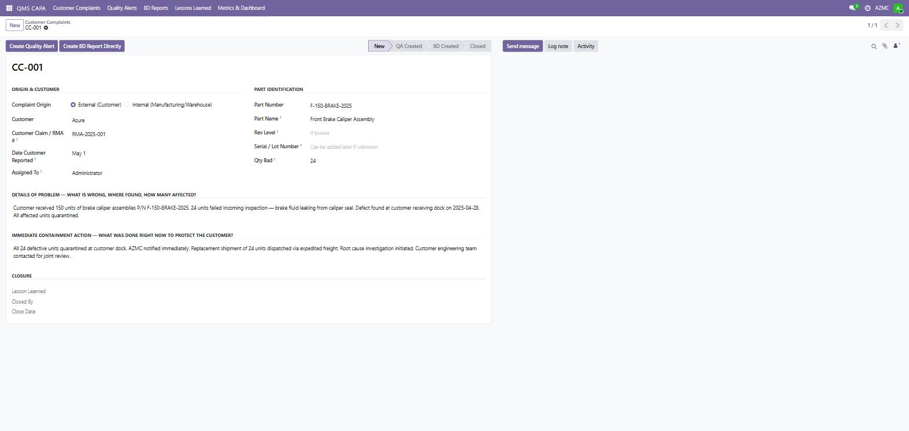
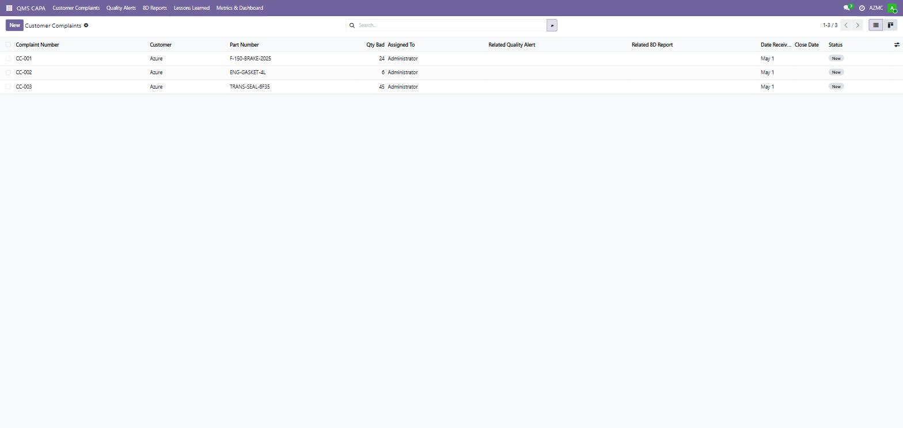
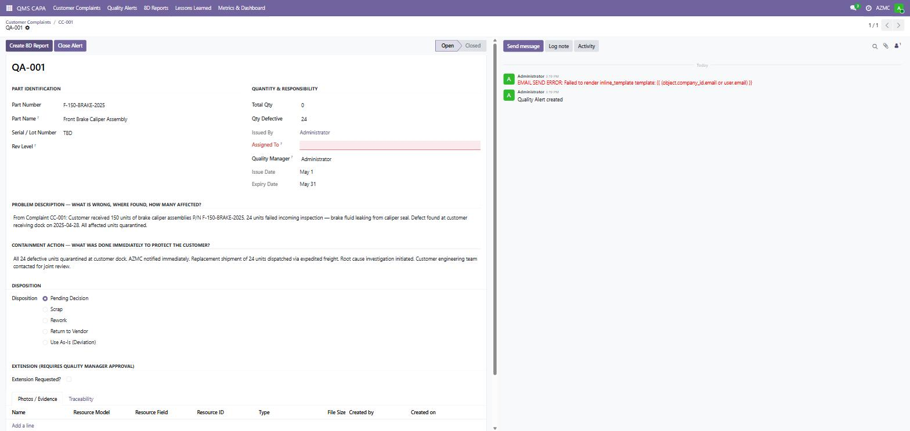

Full-lifecycle CAPA for Odoo 19 - Customer Complaints, Quality Alerts, 8D Reports, and Lessons Learned
Clauses 8.7 (nonconforming outputs), 10.2 (corrective action), 10.3 (continual improvement)
Clauses 10.2.3 (problem solving), 10.2.4 (error-proofing), 10.2.6 (customer complaint escalation)
Clauses 8.7.1 (nonconforming outputs), 10.2 (customer notification), 10.3 (lessons learned)
Auto-numbered complaints (CC-XXX). Capture origin, customer, RMA/claim number, part data, qty defective, containment actions, and closure in one structured form.
Issue Quality Alerts (QA-XXX) directly from complaints. Disposition workflow: Pending, Scrap, Rework, Return to Vendor, or Use As-Is. Expiry tracking and Quality Manager approval gates.
Structured 8-discipline reports (8D-XXX) linked to complaints and alerts. Full D1-D8 coverage: team, problem definition, containment, root cause, corrective actions, verification, and prevention.
Capture institutional knowledge from every CAPA event. Searchable library for PFMEA updates, control plan revisions, and new design reviews across the organization.
Full bidirectional traceability from Complaint to Quality Alert to 8D Report to Lesson Learned. Every record shows links to related documents with smart counters.
Built-in CAPA metrics dashboard. Monitor complaints by status, average closure time, repeat defect rate, top defect part numbers, and corrective action effectiveness.
Attach photos, inspection reports, and signed authorizations to Quality Alerts. Evidence organized by traceability type for complete audit-ready documentation packages.
Automatic email notifications when Quality Alerts are issued. Templates aligned with customer-specific requirements for automotive and aerospace primes.



| Field | Type | Description |
|---|---|---|
| Complaint Number | Char (auto) | Auto-generated CC-XXX sequential identifier |
| Complaint Origin | Selection | External (Customer) or Internal (Manufacturing) |
| Customer | Many2one | Linked Odoo partner (res.partner) |
| Customer Claim / RMA | Char | Customer RMA or claim reference number |
| Part Number | Char | Affected part number as shipped |
| Qty Defective | Integer | Number of defective units reported |
| Assigned To | Many2one | Quality engineer or manager responsible |
| Details of Problem | Text | Full problem description: what, where, how many |
| Immediate Containment | Text | Steps taken immediately to protect the customer |
| Status | Selection | New to QA Created to 8D Created to Closed |
| Field | Type | Description |
|---|---|---|
| Alert Number | Char (auto) | Auto-generated QA-XXX sequential identifier |
| Disposition | Selection | Pending / Scrap / Rework / Return to Vendor / Use As-Is |
| Qty Total / Qty Defective | Integer | Universe quantity and confirmed defective count |
| Issue Date / Expiry Date | Date | Alert validity period (default 30 days) |
| Authorization Ref | Char | ECN, deviation, or engineering change reference |
| Signed Authorization | Binary | PDF upload for quality manager sign-off |
| Photos / Evidence | One2many | Attachments: photos, reports, inspection documents |
Built by quality professionals for quality professionals. This is a purpose-built CAPA workflow that mirrors what automotive and aerospace quality engineers actually do every day. The Customer Complaint to Quality Alert to 8D to Lessons Learned chain mirrors mandatory corrective action required by Ford Q1, GM BIQS, Stellantis SQMS, and Nadcap auditors.
Every field and workflow step was designed around actual customer-specific requirements (CSRs) and expectations for IATF 16949 and AS 9100D surveillance audits.